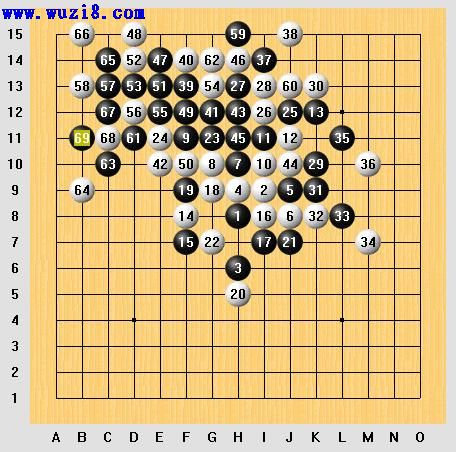

第三届（瑞典）世界连珠锦标赛棋局评论
#1 第三届（瑞典）世界连珠锦标赛棋局评论 作者：蓝天蓝 发表时间：2011-7-19 8:54:54
第三届（瑞典）世界连珠锦标赛棋局评论
原文发表在【复平面】http://hi.baidu.com/%C6%C1%B1%CE
1993年8月第三届（瑞典）世界连珠锦标赛第八轮
明星局（交换），5A＝G9，Inguvar Sundling（黑）胜Nikolay Mikhailov（白）

明星开局，Mikhailov在白10的一个变招成为了本局的转折点。黑11好应对！简单的想法：阻挡，同时形成一个连二和一个跳二。形势对于白棋虽然急转直下，但Sundling却走得中规中矩毫无抢攻之意。Mikhailov使尽浑身解数来把黑棋的优势化为零散的外势，至白20局面似乎也不差，但黑23手Sundling突然变换风格，实战是积极的一手！25、27虽然意在进攻，但却又显出守势，Mikhailov想必对此状况非常不适应，30－K11如何？实战中黑棋抢到31黑要点。白34是无奈的防守，黑35精彩！不仅在于进攻，同时远远地牵制住了纵G线上白棋的眠三，黑37更是配合了这一手。白38防守时阵型已经完全乱了。黑39一击致命！白棋无解了。Mikhailov虽然尽力防守，却只是给了Sundling一个表演14步VCF取胜的机会。Sundling在这局中的表现出的计算力和局面分析能力简直无懈可击。
本文来源于中国五子棋网，原文地址是：http://www.wuzi8.com/xiti/HTML/1098.html